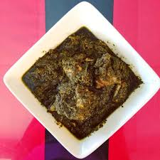

isombe recipe

how to make isombe
isombe is eastafrica dish made from cassave leaves
heated for atleast an hour and adding a mix of specise and meat
to creat an aromatic rich vegetable stew.
Ingredients
- grounded cassava leaves
- grounded nut
- maggi cubes
- salt
- tomatoes
- pepper
- garlic
- oil
steps to making the best isombe
- put the grounded cassava leaves in a pan and
heat for 30 minutes atleast on medium heat
- put in your meat and salt and let it cook for another 30 minutes
- in new pan add oil then add
garlic and onions and fry until they are golden brown
- add pepper and let it cook for a minute add in your mixture
of cassava leaves and meat and toss it for five minutes
- add in some water and then add in your gronded nut
and then maggi
- let it boil for another 30 minutes on medium heat
- turn off the stove now you can serve tis stew with rice or pap
HomeHome